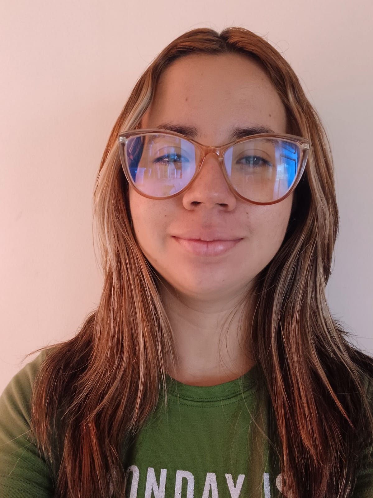
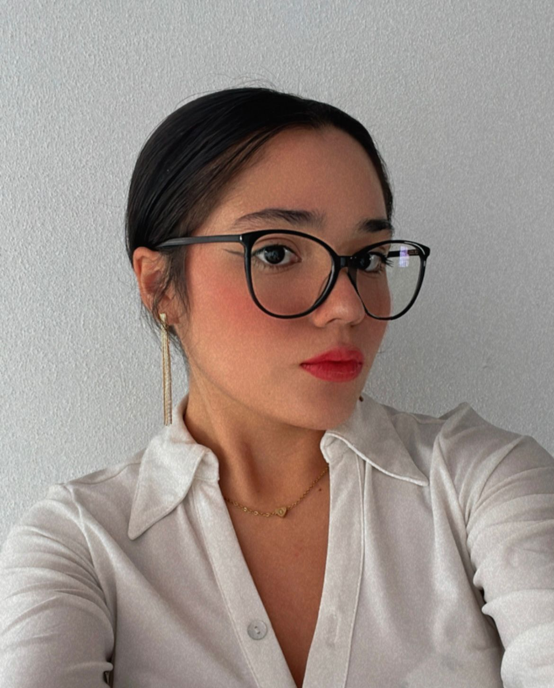

About us
Brayton Maccoy
Technical Department
During the project he was in charge of the backend, exploring the logic behind data cleaning to obtain the exact time of the marsquake.

Keyrin Otárola
Design Department
Responsible for providing a fresh perspective on team identity at a visual level, with advice on color, style and presentation.

Raquel Marín
Research Department
Responsible for the research and documentation of the project, through the creation of a written work that instructs the users both in the step by step of the product, as well as in the theoretical subjects necessary to contextualize.
Ana Paola Mora
Technical Department
In charge of frontend issues, she fulfills the task of elaborating the web page that allows users to obtain the expected results in a simpler way.